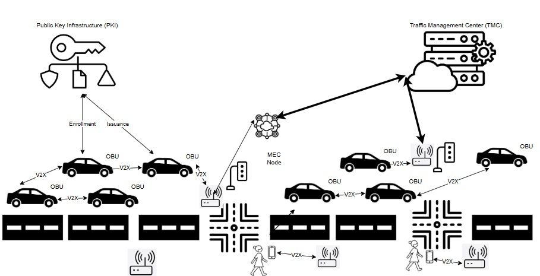

Design and Operate Secure Intelligent Transportation Systems (ITS)¶
Welcome to the International Standards Organization (ISO) Guide Intelligent Transportation Systems (ITS) Cybersecurity. This site provides practical guidance on how to secure ITS deployments, including threats, standards, system-design approaches, and operational practices.
What is an ITS?¶
An ITS is composed of vehicles, roadside devices, communication networks, backend systems and applications that exchange data in near real-time. These components often communicate across trust boundaries. Vehicles may join and leave networks dynamically, and cannot rely on pre-established trust relationships with roadside infrastructure or peer vehicles. The figure below illustrates some of the complexities associated with an ITS System-of-Systems.

Systems such as Roadside Units (RSUs), sensors, and vehicle On-Board Units (OBUs) are often managed by different organizations. Each organization is responsible for securing its own systems and operations. For example, an Original Equipment Manufacturer (OEM) manages software and firmware updates for its brand of vehicles, a fleet operator monitors the performance and security posture of its fleet, and an infrastructure owner/operator manages roadside devices such as traffic signal controllers.
These ITS systems exchange data through defined applications that generate and process messages for specific purposes, such as safety, mobility, or traffic operations. Each message is associated with an application profile that defines its structure, meaning and how it should be handled by a receiving system. For example, a vehicle may broadcast a safety message describing its position, speed and other attributes, while infrastructure systems may exchange signal status or control information. These Vehicle-to-Everything (V2X) messages are transmitted and/or received by applications on vehicles, road side equipment, and backend systems, and must be validated, authorized, and interpreted consistently across all ITS participants.
Because these systems must operate together across organizational boundaries, ITS cybersecurity depends on well-defined standards. These standards define how messages are secured, how devices are identified and authorized, how trust is established between systems, and how data is protected in transit and at rest.
The following sections provide practical guidance on key aspects of ITS cybersecurity, including how messages are secured, how devices are identified and authorized, how trust is established between systems, and how data is protected in transit and at rest.
Start Here: Introduction to ITS Cybersecurity – A Beginner's Guide¶
If you are new to the concept of ITS cybersecurity, start with the Beginners Guide. Use this as a starting point to understand how ITS systems validate messages, authenticate participants, enforce authorization, and maintain trust across distributed environments.
A glossary of terms is also available here: site glossary.
Design and Implement ITS Cybersecurity¶
Use this guide to define, implement, and maintain ITS cybersecurity. The sections below are organized as a workflow, from establishing trust and identifying applicable standards, to analysing threats, implementing controls, enabling interoperability, and maintaining secure operation. Start with the areas most relevant to your work, or follow the sections in order to develop a complete, standards-aligned ITS cybersecurity approach.
1. Establish and Validate Trust Using Cryptography and Certificates¶
Define how ITS systems determine which messages to trust, which devices are authorized to participate, and how those decisions are enforced during operation. Cryptography is used to implement these functions across both broadcast communications (V2X) and point-to-point connections between infrastructure and backend systems. Use this section to define requirements and implement mechanisms for message validation, certificate-based authentication and authorization, secure communications, and credential lifecycle management.
2. Identify and Apply ITS Security Regulations and Standards¶
Determine which regulations, frameworks, and standards apply to your ITS deployment and how they translate into security requirements for systems, devices, and operations. These documents define governance expectations, mandatory obligations, and technical implementation approaches across regions and stakeholders. Use this section to identify applicable regulations, align with frameworks such as NIST CSF and ISO/IEC 27001, and select technical standards that define how security is implemented in ITS systems, devices, and applications.
3. Conduct an ITS Threat Analysis¶
Determine how threats to ITS systems translate into operational risk and what must be protected across devices, communications, and services. Threat analysis identifies assets, data flows, and trust boundaries, and evaluates how they could be targeted by adversaries. Use this section to perform a threat, vulnerability, and risk assessment (TVRA), assess likelihood and impact, and prioritize risks to define security requirements and guide control selection.
4. Implement Consistent Security Across ITS Systems¶
Define how security is consistently implemented across ITS devices, applications, networks, and operational processes. ITS systems require repeatable approaches to enforce trust, validate messages, manage credentials, and detect and respond to misbehaviour across distributed components. Security design patterns provide reusable solutions to these challenges, organized by functional areas such as application, device, network, and management layers. Use this section to select and apply proven security patterns, translate requirements into implementable controls, and ensure consistent enforcement of security functions across ITS deployments.
5. Enable Secure Interoperable Systems¶
Determine how ITS systems interoperate across devices, vendors, and jurisdictions while maintaining consistent interpretation and enforcement of security decisions. Interoperability requires both message compatibility and aligned trust models so that systems can validate and authorize data from external sources. Use this section to define interoperability requirements, align policies across trust domains, and implement mechanisms such as PKI and standards like IEEE 1609.2.2 to establish and control trust between systems.
6. Configure and Harden ITS Devices for Secure Operation¶
Define how ITS devices and systems are securely configured and hardened to operate in exposed and distributed environments. Many ITS deployments are physically accessible and remotely reachable, increasing the risk of compromise if not properly secured. Use this section to implement configuration and hardening practices across authentication, access control, logging, encryption, software updates, and key management to reduce attack surface, enforce consistent security policies, and maintain secure operation over time.
7. Assign and Coordinate Cybersecurity Responsibilities¶
Define how cybersecurity responsibilities are assigned across ITS stakeholders and how those responsibilities are coordinated to support secure system operation. ITS cybersecurity spans multiple organizations, including standards developers, certificate authorities, infrastructure operators, OEMs, application developers, and policy authorities, each responsible for different parts of the system. Use this section to understand stakeholder roles, define responsibilities, and ensure coordinated implementation of security controls across vehicles, infrastructure, backend systems, and trust services.
8. Identify and Remediate Common ITS Security Gaps¶
Determine where ITS systems fail to correctly validate data, enforce authorization, and apply trust decisions during operation. When these functions are implemented incorrectly or behave inconsistently, systems may accept invalid inputs, misinterpret data, or apply incorrect decisions. Use this section to identify common security gaps, understand their root causes, and apply the required controls to ensure correct, consistent, and reliable system behaviour.